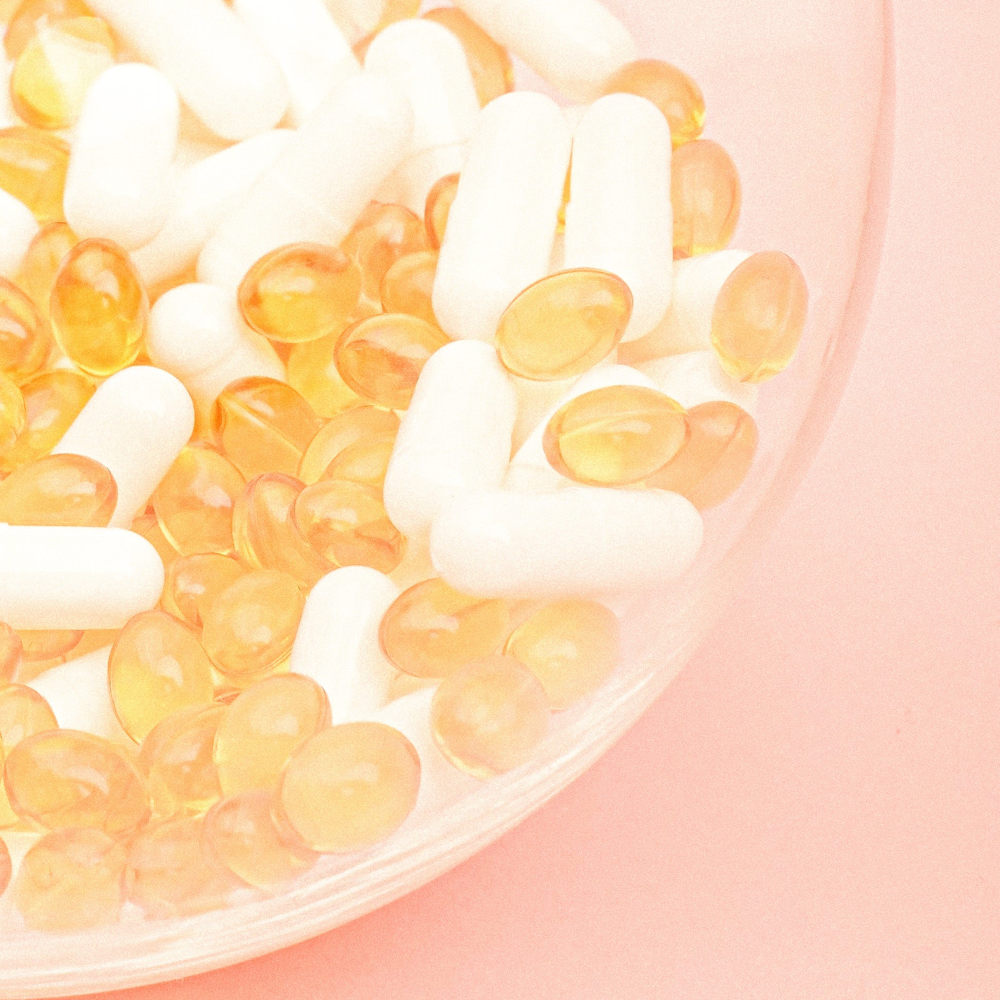
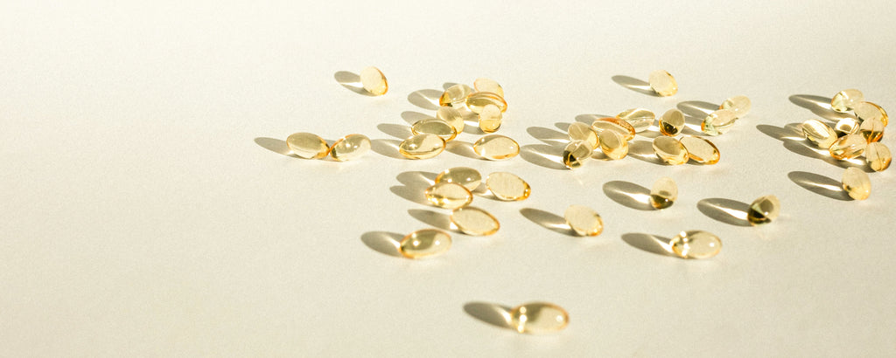

Vitamine E : bienfaits, sources et carence

La vitamine E est un nutriment essentiel qui joue un rôle vital dans le maintien d'une bonne santé. C'est un antioxydant puissant qui aide à protéger les cellules contre les dommages causés par les radicaux libres, qui peuvent entraîner des maladies chroniques telles que le cancer et les maladies cardiaques.
Dans cet article, nous explorerons les nombreux avantages de la vitamine E, où la trouver dans votre alimentation et que faire si vous pensez être déficient.

Qu'est-ce que la vitamine E et pourquoi est-elle importante ?
La vitamine E est une vitamine liposoluble présente dans de nombreux aliments, notamment les huiles végétales, les noix, les graines et les légumes verts à feuilles. Il est important pour une variété de fonctions dans le corps, y compris le maintien de l'intégrité des membranes cellulaires et le soutien du système immunitaire.Bienfaits de la vitamine E
Certains des avantages connus de la vitamine E incluent :
- Protéger les cellules des dommages causés par les radicaux libres
- Réduire le risque de maladie cardiaque et d'accident vasculaire cérébral
- Améliorer la santé de la peau et réduire l'apparence des cicatrices et des rides. Il vous faut utiliser des produits cosmétiques qui contiennent de la vitamine E, plus d'information sur cette article ou bien sur des produits qui en contiennent.
- Améliorer la fonction immunitaire et prévenir les infections
Sources de vitamine E
Les meilleures sources de vitamine E comprennent :- Huiles végétales (telles que l'huile d'olive, de tournesol et de carthame)
- Noix (comme les amandes, les noisettes et les cacahuètes)
- Graines (comme les graines de tournesol et les graines de citrouille)
- Légumes verts à feuilles (comme les épinards et le brocoli)
Carence en vitamine E
Bien que la carence en vitamine E soit rare, elle peut survenir chez les personnes atteintes de certains problèmes de santé ou celles qui ont de la difficulté à absorber les graisses. Les symptômes de carence peuvent inclure :- Système immunitaire faible
- Peau sèche et squameuse
- Dommages aux cellules nerveuses
- Faiblesse musculaire
En conclusion, la vitamine E est un nutriment vital qui joue un rôle clé dans le maintien d'une bonne santé. En incluant une variété de sources dans votre alimentation et en consommant suffisamment de cet important nutriment, vous pouvez aider à protéger vos cellules contre les dommages et à soutenir votre système immunitaire.
Si vous pensez avoir une carence en vitamine E, il est important de parler à un professionnel de la santé pour un diagnostic et un traitement appropriés.